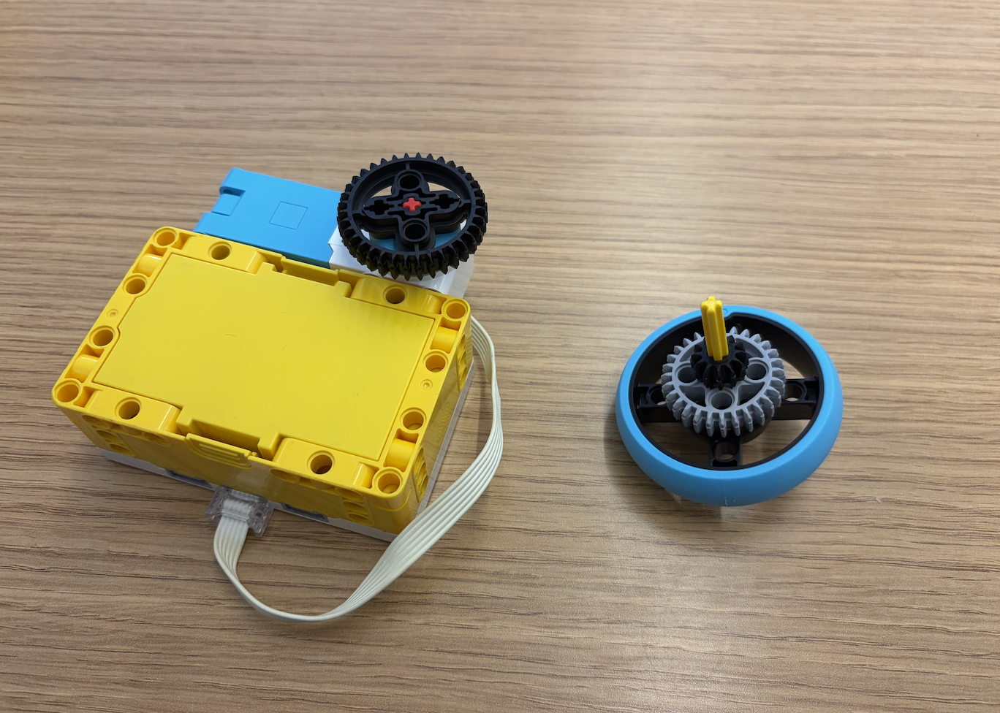
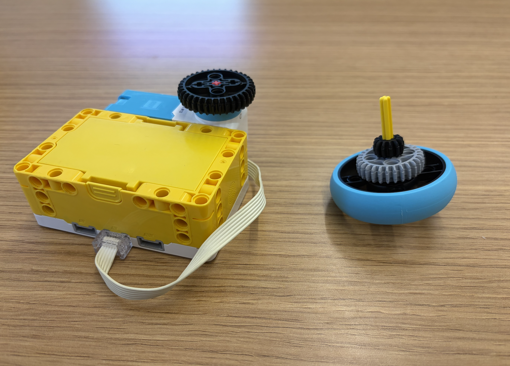

To create my top spinner, I used a simple design of a medium motor and a 36-toothed gear. I found that by creating my top with a 12-toothed gear, I was able to achieve a smoother and more stable spin for my top. I designed my top using an axle, two gears, and a wheel for added stability. I found that my top ended up being the 3rd most stable while spinning in the class!